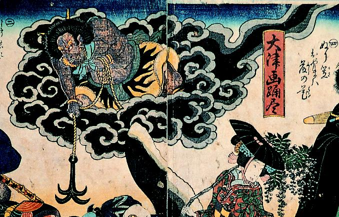

黒雲の上に乗り、下界へ錨をおろす鬼。肌は茶色で、緑の襟巻き、虎皮の腰巻を身に着けている。
著作者：歌川国貞／出典：親書誌：A5_pushkin_0027：大津画踊尽；オオツエオドリヅクシ／日付：2011／資源識別子：A5_pushkin_0027_0002_0000
Copyright (c)2010- International Research Center for Japanese Studies, Kyoto, Japan. All rights reserved.